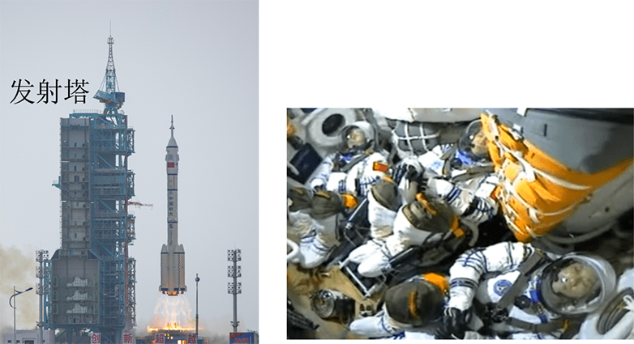

2023年北京中考物理 第4题 解析
4. 2023年5月30日，搭载神舟十六号载人飞船的长征二号F遥十六运载火箭，在酒泉卫星发射中心成功发射。图中所示的是火箭上升和此过程中航天员在舱内的情境，下列说法正确的是（ ）

A. 以地面为参照物，发射塔是运动的
B. 以发射塔为参照物，火箭是静止的
C. 以舱内的航天员为参照物，火箭是静止的
D. 以舱内的航天员为参照物，发射塔是静止的
【答案】C
【解析】
【详解】A．以地面为参照物，发射塔的位置不变，是静止的，故A错误；
B．以发射塔为参照物，火箭的位置不断变化，是运动的，故B错误；
C．以舱内的航天员为参照物，火箭位置不变，是静止的，故C正确；
D．以舱内的航天员为参照物，发射塔位置不断变化，是运动的，故D错误。
故选C。